2025-07-18
7.1 随机生存森林模型简介
7.2 梯度提升生存模型实操：从建模到可视化
7.3 梯度提升生存模型简介
7.4 梯度提升生存模型实操：从建模到可视化
随机生存森林 (Random Survival Forest) 模型：随机森林 (Random Forest)在生存分析中的扩展，结合了决策树和集成学习的思想，适用于处理生存时间数据。
RSF是一种基于随机森林的扩展，结合多棵生存树预测生存时间或风险。每个树基于随机样本和特征子集构建，输出累积风险函数（CHF）或生存概率。
基于生存树的集成：RSF 通过构建多棵生存决策树（Survival Tree），每棵树基于随机采样的数据子集和特征子集训练。
生存树不同于传统分类树，它的目标是预测生存时间或累积风险函数 (Cumulative Hazard Function, CHF)，而不是简单的分类或回归。
Bootstrap 采样与随机特征选择：使用 Bootstrap 方法从原始数据中随机抽样（有放回），并在每次分裂节点时随机选择特征子集（控制参数 mtry），增加模型的多样性和鲁棒性。
预测输出：每个树输出个体的生存概率或风险分数，RSF 通过所有树的平均或加权组合生成最终预测。输出包括生存函数 $ S(t) $ 或累积风险 $ H(t) $。
袋外数据 (Out-of-Bag, OOB)：未被抽样到的数据用于验证模型，计算 OOB 误差，评估预测性能。
RSF 的建模过程避免了强分布假设（如指数或 Weibull 分布），通过非参数方式适应复杂数据模式。
传统生存分析方法（如 Cox、AFT 和竞争风险模型）通常依赖比例风险或特定分布等假设。
机器学习方法通过构建非参数模型，灵活处理非线性、高维特征及交互作用，拓展了生存分析的适用范围。
无强假设：不要求比例风险假设（Cox 模型）或特定时间分布（AFT 模型），适合非线性关系和复杂交互效应。
鲁棒性：通过随机性和集成学习，RSF 对异常值、缺失值和噪声数据具有较强容忍度。
变量选择与重要性：自动评估变量重要性（Variable Importance, VIMP），帮助识别关键预测因子，无需手动筛选。
高维数据处理：适合包含大量协变量的数据集，自动处理特征冗余。
丰富的可视化：提供生存曲线、风险分布、部分依赖图等，直观展示结果。
灵活性：通过调整参数（如 ntree, mtry, nodesize），可平衡偏差和方差。
计算复杂度较高：随着树的数量（ntree）和样本规模增加，计算成本显著上升，适用于中等规模数据，效率不及线性模型。
解释性较弱：相较于 Cox 模型的回归系数，RSF 输出的风险评分或生存概率难以直接解释，尤其难以量化交互项的具体贡献。
对超参数敏感：mtry、nodesize 和 ntree 等参数需调优，设置不当易导致过拟合或欠拟合。
对稀疏数据不敏感：在事件稀少或时间分布不均的情况下，分裂标准效果下降，模型性能可能受限。
缺乏统计推断框架：作为非参数方法，RSF 不依赖分布假设，虽适合预测任务，但不易提供置信区间或因果解释。
非线性与交互复杂的关系：当协变量与生存时间之间存在非线性模式或高阶交互（如基因表达或影像特征）时，RSF 能自动建模此类复杂结构。
高维小样本数据：在变量数远多于样本量的场景（如基因组学研究）中，RSF 可自动进行特征选择与维度压缩。
群体异质性显著：当研究对象具有高度异质性，传统模型（如 Cox）所依赖的比例风险假设难以成立时，RSF 提供更具鲁棒性的替代方案。
探索性分析场景：适用于变量筛选和预测模型构建，尤其在研究早期阶段有助于发现潜在关联。
竞争风险背景：尽管 RSF 并非专为竞争风险设计，但可通过模型扩展（如多状态建模）加以适配。
最小要求：建议样本量至少为 100-200 个观测值，以确保 Bootstrap 采样的有效性。事件数（非删失样本）应至少为 50-100，以提供足够的信号。
理想范围：500-1000 个样本可获得较稳定的结果，大样本（>1000）进一步提升性能。
限制：样本量过小（如 <50）会导致树分裂不足，模型性能下降；事件稀少可能加剧此问题。
最低要求：建议样本量至少为 100–200，以确保 Bootstrap 重抽样的稳定性；其中事件数（非删失个案）应不少于 50–100，以提供足够的有效信息。
理想范围：500–1000 个样本可确保模型稳定性；大样本（>1000）有助于进一步提升预测性能与变量选择的可靠性。
主要限制：样本过少（<50）会导致分裂节点不足、模型不稳定；若事件稀少，则信息量进一步降低，影响模型有效性。
事件-变量比建议至少为 5:1 至 10:1，以降低过拟合风险。
nodesize（终端节点最小样本数）：通常设为 5–15，样本量较大时可适当上调，以提高稳定性。
mtry（每次分裂时随机选择的变量数）：默认值为变量个数的平方根，可根据变量维度与模型复杂度调节。
GBSG2{TH.data} 686 名乳腺癌患者
time：生存时间（天）。
cens：删失状态（1=事件发生，0=删失）
horTh：激素治疗（yes/no）
age：年龄
menostat：绝经状态（Pre/Post）
tsize：肿瘤大小（毫米）
tgrade：肿瘤分级（I/II/III）
pnodes：淋巴结数量
progrec：孕激素受体
estrec：雌激素受体
样本容量：686
事件数 299
变量个数：8
事件-变量比约 299/8 = 37
randomForestSRC::rfsrc()，定性变量必须设为 factor 类型。
rfsrc() 如何判断变量类型？
factor 类型 → 视为分类变量，使用基于类别的分裂规则；
数值型变量（包括 0/1）→ 视为连续变量，用于数值型分裂；
字符串类型 → 自动转换为 factor
数据预处理
formula Surv(time, status) ~ x1 + x2 + …
ntree 构建的树的数量，默认 1000
mtry 每次节点分裂时随机选取的变量数，默认是变量个数的平方根
nodesize 每棵树终端节点的最小样本数（生存模型中建议 15–25）
importance 是否计算变量重要性
block.size 控制高维数据的内存计算效率，建议设为 10–50
splitrule 分裂标准，生存模型中默认为 “logrank”
查看RSF模型摘要
Sample size: 686
Number of deaths: 299
Number of trees: 500
Forest terminal node size: 15
Average no. of terminal nodes: 33.17
No. of variables tried at each split: 3
Total no. of variables: 8
Resampling used to grow trees: swor
Resample size used to grow trees: 434
Analysis: RSF
Family: surv
Splitting rule: logrank *random*
Number of random split points: 10
(OOB) CRPS: 395.78328138
(OOB) stand. CRPS: 0.16114954
(OOB) Requested performance error: 0.30563319Sample size: 686 总样本量为 686，表示模型训练时使用的观察总数。
Number of deaths: 299 发生事件（死亡或目标结局）的数量为 299，剩余样本为审查（censored）数据。
Number of trees: 500 模型构建了500棵决策树，这是随机森林的核心参数，控制模型的稳定性和泛化能力。树数较多通常提高精度但增加计算成本。
Forest terminal node size: 15 每棵树的终端节点（leaf node）最小样本数为15。这是树的复杂度控制参数，防止过拟合。
Average no. of terminal nodes:33.166 平均每棵树有约 33.166 个终端节点，反映树的平均深度和复杂度。
RSF模型估计结果解读
No. of variables tried at each split: 3 每次分裂时随机选择的变量数为 3。随机森林m模型的关键特征，通过限制变量数量引入随机性，减少相关性。
Total no. of variables: 8 模型总共使用了 8 个预测变量。
Resampling used to grow trees:swor 使用了“sampling without replacement”（无放回抽样）方法生长树。这确保每个树基于不同的子样本，提高模型多样性。
Resample size used to grow trees: 434 每棵树生长时使用的子样本大小为 434（约占总样本 686 的 63%），这是无放回抽样的结果。
Analysis: RSF分析类型为随机生存森林（Random Survival Forest），专门用于生存数据。
RSF模型估计结果解读
Family: surv 模型家族为“surv”（生存分析），表示处理时间到事件数据。
Splitting rule: logrank random 分裂规则基于 log-rank 统计量，带随机性（random），用于优化节点分裂以最大化生存差异。
Number of random split points: 10 每次分裂尝试 10 个随机切分点，增加随机性并提高计算效率。
(OOB) CRPS: 395.67263386
外部样本（Out-Of-Bag, OOB）累积预测误差 (Cumulative Rank Probability Score, CRPS) 为 395.67。
CRPS 衡量预测分布与实际观测的匹配程度，值越小越好。
(OOB) stand. CRPS: 0.16110449 标准化 OOB CRPS 为 0.161。
(OOB) Requested performance error: 0.30879613 请求的 OOB 性能误差为0.309。
Variable Importance
pnodes pnodes 0.1611522459
age age 0.1080859247
progrec progrec 0.0863406667
estrec estrec 0.0350998400
tsize tsize 0.0257674972
tgrade tgrade 0.0146106773
horTh horTh 0.0145439118
menostat menostat 0.0009477045Importance：变量重要性得分，数值越大表示该变量在区分生存时间或事件发生方面的贡献越大。
pnodes 是最重要变量，贡献约占 16.2%，远高于其他变量。
age和 progrec 也显著，贡献分别约 11.3% 和 8.5%。
menostat 几乎无影响(0.05%)。
重要性得分差异较大，前三变量 (pnodes, age, progrec) 占主导，其余变量影响较弱。
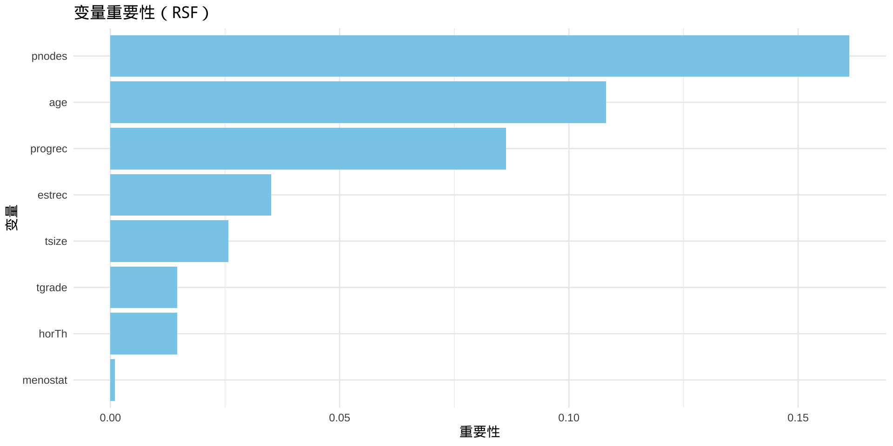
随机生存森林模型可输出每个个体的生存风险评分，用于衡量其发生目标事件（如死亡）的相对风险或预期生存时间。在生存分析中，该风险评分通常基于累积危险函数（Cumulative Hazard Function, CHF）计算。
风险分数越高，表示该个体累积风险越大，预示其更可能较早发生事件或生存时间较短。
在 rsf_model 中，风险分数对应于模型为每个样本估计的预期累积危险值（或其函数变换），体现了在给定协变量（如 age、pnodes 等）条件下预测的个体死亡风险水平。
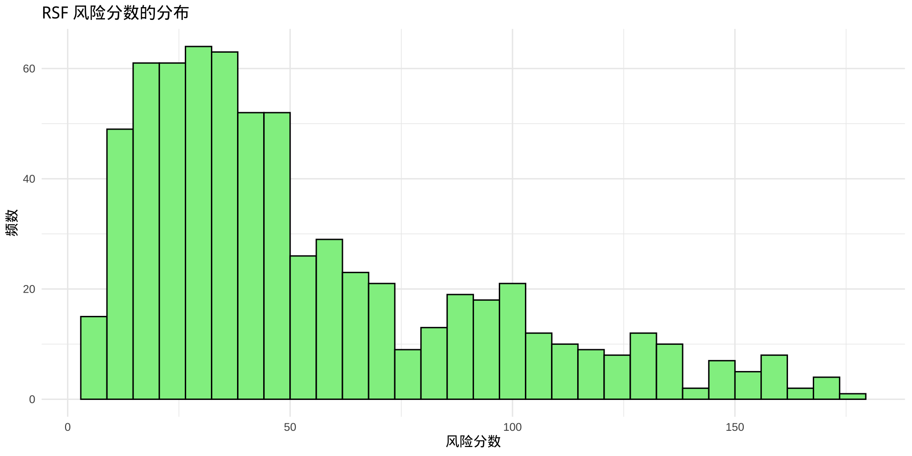
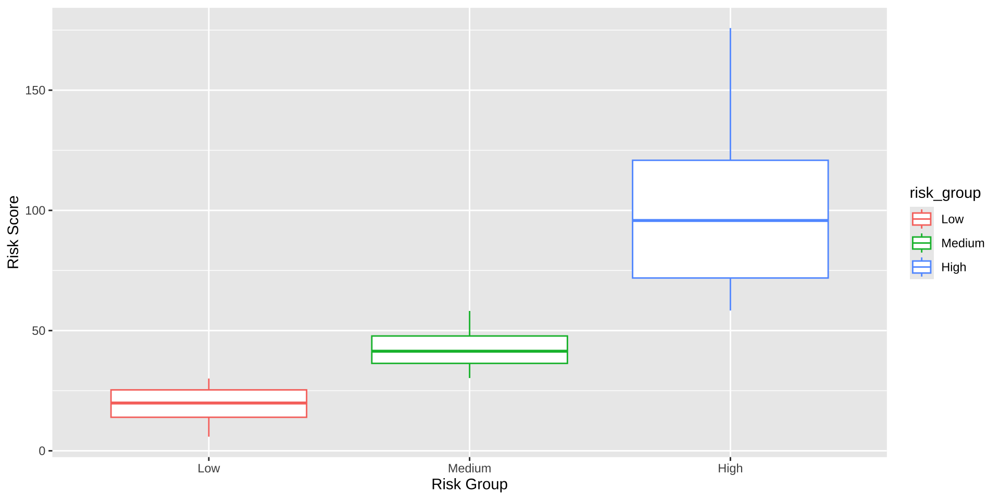
# Kaplan-Meier估计
surv_fit <- survfit(Surv(time, cens) ~ risk_group, data = gbsg2)
# 低中高风险组分组KM曲线
library(survminer)
ggsurvplot(surv_fit,
data = gbsg2,
palette = "set1", # 低、中、高风险颜色
ggtheme = theme_minimal(),
legend.title = "Risk Group",
legend.labs = c("Low", "Medium", "High"),
xlab = "Time (Days)",
ylab = "Survival Probability",
conf.int = TRUE) # 添加置信区间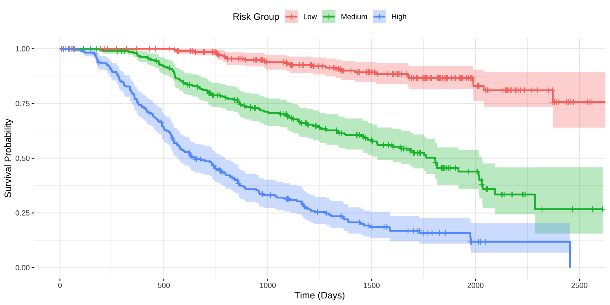
高中低组间差异log-rank检验
Call:
survdiff(formula = Surv(time, cens) ~ risk_group, data = gbsg2)
n=685, 1 observation deleted due to missingness.
N Observed Expected (O-E)^2/E (O-E)^2/V
risk_group=Low 226 26 130.1 83.260 151.460
risk_group=Medium 226 99 104.0 0.244 0.375
risk_group=High 233 174 64.9 183.412 242.247
Chisq= 278 on 2 degrees of freedom, p= <2e-16 library(reshape2)
library(ggplot2)
# 假设 rsf_model 已经训练好，将gbsg2[1:5, ]的前五个样本视作 5个新样本
library(pec)
times <- seq(0, 2000, 100)
surv_pred <- predictSurvProb(rsf_model,
newdata = gbsg2[1:5, ],
times = times)
# 转成长数据框
df_long <- data.frame(
time = rep(times, 5),
surv = as.vector(t(surv_pred)),
patient = rep(paste0("患者", 1:5),
each = length(times))
) time surv patient
1 0 1.0000000 患者1
2 100 0.9998490 患者1
3 200 0.9992339 患者1
4 300 0.9953144 患者1
5 400 0.9691764 患者1
6 500 0.9150668 患者1 time surv patient
100 1500 0.5068537 患者5
101 1600 0.4637897 患者5
102 1700 0.4241966 患者5
103 1800 0.3959339 患者5
104 1900 0.3581623 患者5
105 2000 0.3412180 患者5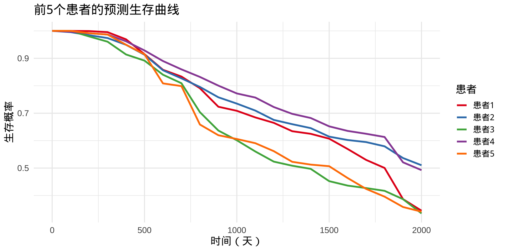
通过迭代训练多个弱学习器（通常为回归树），每一轮模型都修正前一轮的误差，从而逼近真实目标函数。
在生存分析中，GBM 可用于优化多种生存目标函数，包括：
传统生存模型（如 CoxPH）面临以下限制：
当假设不成立时，预测性能下降。
GBM-Survival 优势：
GBM-Survival 适用于以下任务：
| 要素 | 建议标准 |
|---|---|
| 样本容量 | 最低建议 100–200，推荐 ≥500 |
| 事件数/变量比 | ≥5–10，避免过拟合 |
| 变量个数 | 推荐 5–50，若 >50 建议预筛选或降维 |
GBSG2{TH.data} 686 名乳腺癌患者
time：生存时间（天）。
cens：删失状态（1=事件发生，0=删失）
horTh：激素治疗（yes/no）
age：年龄
menostat：绝经状态（Pre/Post）
tsize：肿瘤大小（毫米）
tgrade：肿瘤分级（I/II/III）
pnodes：淋巴结数量
progrec：孕激素受体
estrec：雌激素受体
gbm::gbm()，定性变量建议设为 factor 类型。
gbm() 能自动处理 factor型变量，会自动哑变量编码（dummy coding），按类别分裂。
如果你用0-1数值型变量，gbm()会把它当作连续型变量，决策树会直接比较数值，不是严格按两类分裂
distribution = "coxph"
"coxph" 时，模型基于部分似然估计风险，适合处理生存时间和审查数据（如 Surv(time, cens)）。n.trees = 100
interaction.depth = 3
shrinkage = 0.1
n.trees。bag.fraction = 0.5
verbose = FALSE
FALSE 静默运行，设为 TRUE 可调试模型过程。 var rel.inf
pnodes pnodes 26.260071
progrec progrec 19.699422
age age 17.942018
tsize tsize 15.076689
estrec estrec 12.273676
horTh horTh 5.156244
tgrade tgrade 3.591881
menostat menostat 0.000000 variable importance
1 horTh 26.260071
2 age 19.699422
3 menostat 17.942018
4 tsize 15.076689
5 tgrade 12.273676
6 pnodes 5.156244
7 progrec 3.591881
8 estrec 0.000000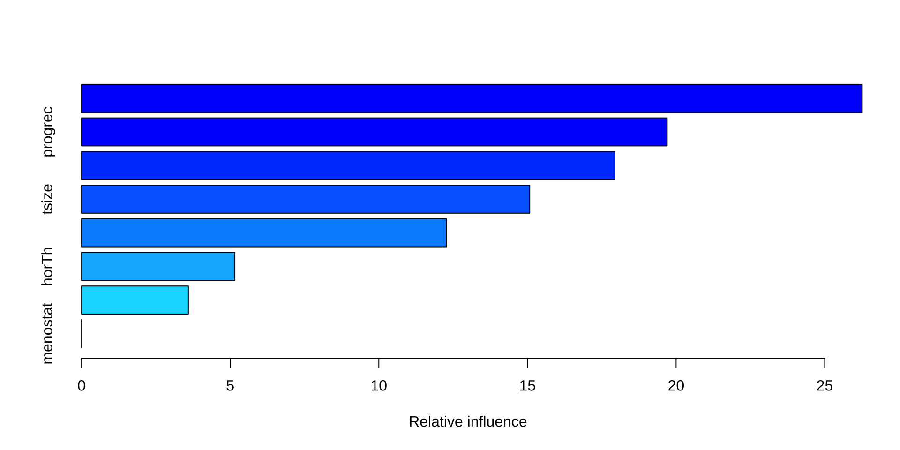
绘制变量相对影响条形图
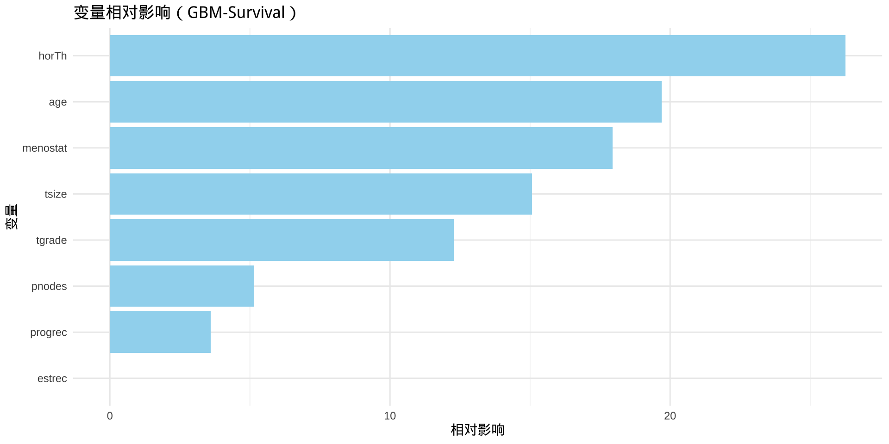
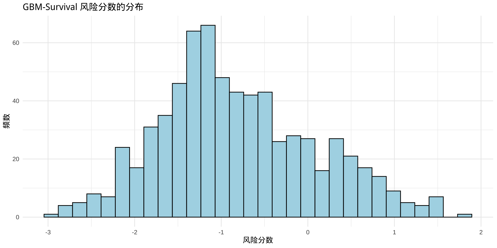
部分依赖图（Partial Dependence Plot, PDP）是一种可视化工具，用于展示一个或多个特征（预测变量）对机器学习模型预测输出的边际效应，忽略其他变量的交互影响。
它通过对其他变量取平均值，隔离目标变量（如pnodes）的贡献，生成一个平均化的效应曲线。
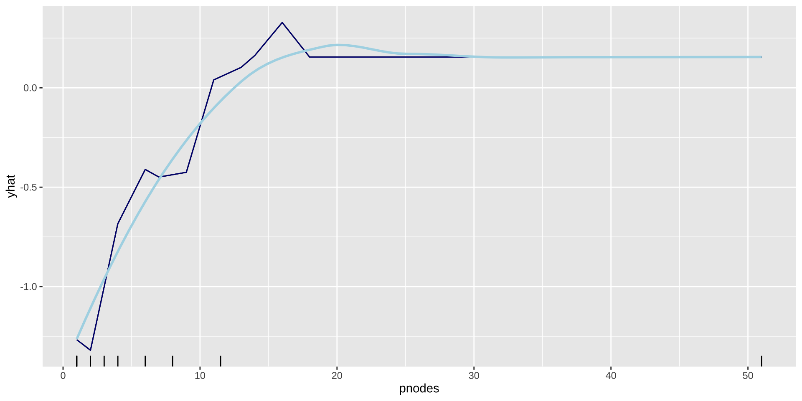
partial() 函数输出模型预测值, 即对数累积危险
X轴代表淋巴结数量, Y轴代对数累积危险
若曲线呈上升趋势，表明淋巴结数量(pnodes)增加与风险升高相关
若有拐点或平台，提示非线性效应（如低 pnodes 时风险低，超过某阈值后急升）
rug 标记：横轴上的小标记表示训练数据 pnodes的分布，注意曲线在数据稀疏区域（标记少）的外推风险。
展示两个预测变量（如 pnodes 和 age）的联合边际效应，通常以伪彩色级别图或等高线图形式。
chull = TRUE 限制范围在训练数据凸包内，contour = TRUE 添加等高线
颜色/伪彩色：表示对数累积危险（log hazard）的强度，深色为低风险，浅色为高风险
等高线：contour = TRUE 添加的线表示 log hazard的等值线，密集线段提示风险梯度大。
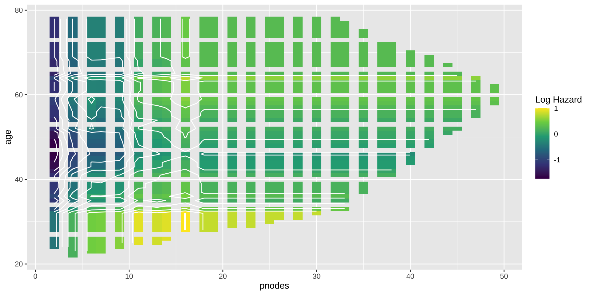
颜色梯度：观察颜色从深到浅的变化，浅色区域（如 pnodes > 10 和 age > 60）表示高风险。
等高线解读：等高线密集处（如 pnodes = 5-10）表明风险快速变化。
凸包限制：chull = TRUE 确保仅显示训练数据范围，避免外推。
交互效应：若颜色变化主要随 pnodes 而非 age，说明 pnodes 占主导；若有交叉模式，提示两变量交互。
临床意义：例如，若 age < 50 时 pnodes 影响小，但 age > 70 时风险随 pnodes 激增，可能反映老年患者更脆弱。
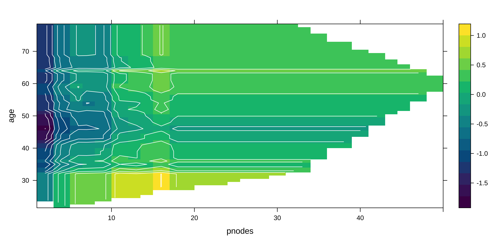
Individual Conditional Expectation, ICE, ICE 为每个观测值生成单独的曲线，而不是平均效应，反映 pnodes 对该样本风险的个性化效应。
ICE曲线存在相交说明：存在特征交互效应, 模型对特征X的效应与其他变量有关，存在变量间交互作用。
部分依赖图（PDP）是ICE曲线的均值。ICE曲线大范围相交时，PDP会掩盖不同个体的异质性，PDP的解释力变弱。
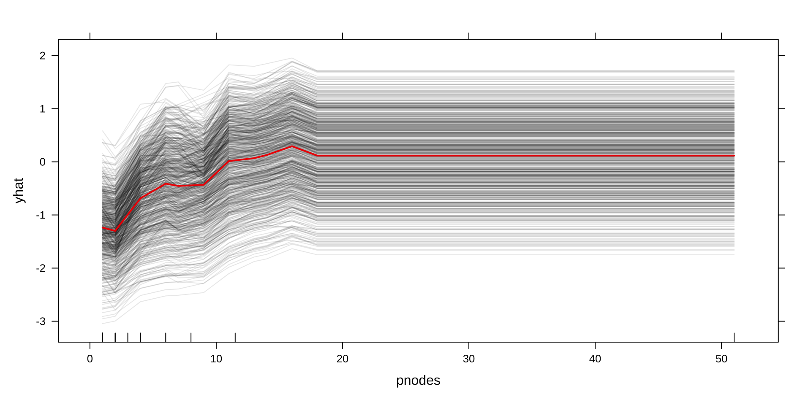
个体条件期望曲线ICE Curves
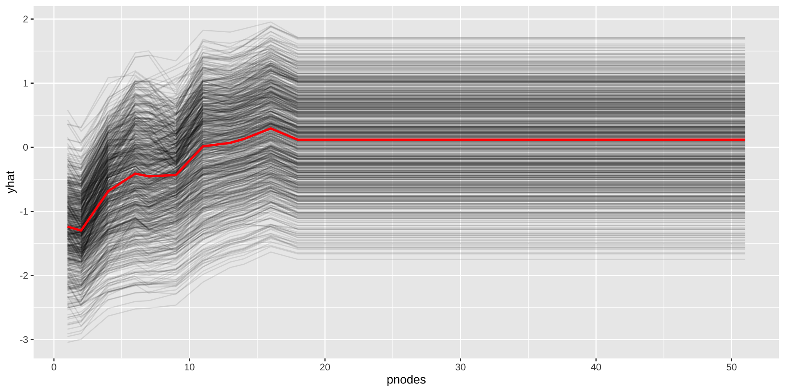
7.4.10 中心化个体条件期望曲线 (c-ICE Curves)
目的：中心化后更易观察个体效应差异。
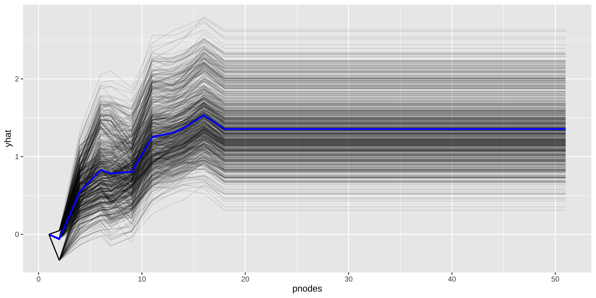
总结
https://lizongzhang.github.io/survival
© 2025 2025 医咖会 Li Zongzhang